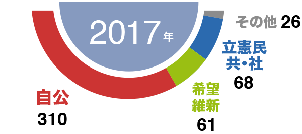
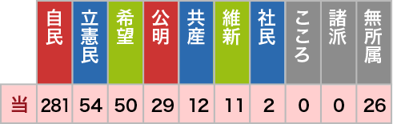
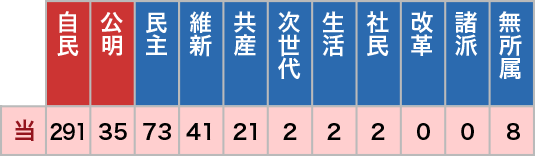
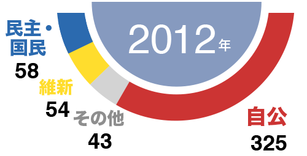
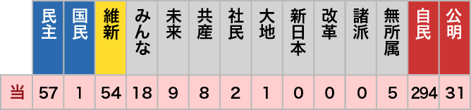

衆院の新勢力
与党
352
+120
野党
109
-109
その他
4
-11
過半数 233
0
公示前
選管確定
追加公認含む
衆院選2026(1月27日公示、2月8日投開票)の開票結果をお伝えします。候補者一覧とプロフィルも掲載中です。
| 当選(増減) | 小選 挙区 | 比例 | 公示前 | ||
|---|---|---|---|---|---|
| 自民 | 316 (+118) | 249 | 67 | 198 | |
| 維新 | 36 (+2) | 20 | 16 | 34 | |
| 中道 | 49 (-118) | 7 | 42 | 167 | |
| 国民 | 28 (+1) | 8 | 20 | 27 | |
| 共産 | 4 (-4) | 0 | 4 | 8 | |
| れいわ | 1 (-7) | 0 | 1 | 8 | |
| 減ゆう | 1 (-4) | 1 | 0 | 5 | |
| 参政 | 15 (+13) | 0 | 15 | 2 | |
| 保守 | 0 (-1) | 0 | 0 | 1 | |
| 社民 | 0 (0) | 0 | 0 | 0 | |
| みらい | 11 (+11) | 0 | 11 | 0 | |
| 諸派 | 0 (0) | 0 | 0 | 0 | |
| 無所属 | 4 (-11) | 4 | 0 | 15 | |
| 合計 | 465 | 289 | 176 | 465 | |
| 定数 | 465 | 289 | 176 | ||
小選挙区
与党
269
その他
4
野党
16
山田 美樹
東京1・自民
辻 清人
東京2・自民
石原 宏高
東京3・自民
平 将明
東京4・自民
若宮 健嗣
東京5・自民
畦元 将吾
東京6・自民
丸川 珠代
東京7・自民
門 寛子
東京8・自民
菅原 一秀
東京9・自民
鈴木 隼人
東京10・自民
下村 博文
東京11・自民
高木 啓
東京12・自民
土田 慎
東京13・自民
松島 みどり
東京14・自民
大空 幸星
東京15・自民
大西 洋平
東京16・自民
平沢 勝栄
東京17・自民
福田 かおる
東京18・自民
松本 洋平
東京19・自民
木原 誠二
東京20・自民
小田原 潔
東京21・自民
伊藤 達也
東京22・自民
川松 真一朗
東京23・自民
萩生田 光一
東京24・自民
井上 信治
東京25・自民
今岡 植
東京26・自民
黒崎 祐一
東京27・自民
安藤 高夫
東京28・自民
長沢 興祐
東京29・自民
長島 昭久
東京30・自民
丸尾 南都子
神奈川1・自民
新田 章文
神奈川2・自民
中西 健治
神奈川3・自民
永田 磨梨奈
神奈川4・自民
坂井 学
神奈川5・自民
古川 直季
神奈川6・自民
鈴木 馨祐
神奈川7・自民
三谷 英弘
神奈川8・自民
上原 正裕
神奈川9・自民
田中 和徳
神奈川10・自民
小泉 進次郎
神奈川11・自民
星野 剛士
神奈川12・自民
丸田 康一郎
神奈川13・自民
赤間 二郎
神奈川14・自民
河野 太郎
神奈川15・自民
佐藤 主迪
神奈川16・自民
牧島 かれん
神奈川17・自民
山際 大志郎
神奈川18・自民
草間 剛
神奈川19・自民
金沢 結衣
神奈川20・自民
比例代表
与党
83
その他
0
野党
93
長野 春信
南関東・自民
伊藤 聡
南関東・自民
文月 涼
南関東・自民
岩崎 比菜
南関東・自民
金村 龍那
南関東・維新
横田 光弘
南関東・維新
角田 秀穂
南関東・中道
沼崎 満子
南関東・中道
原田 直樹
南関東・中道
笠 浩史
南関東・中道
後藤 祐一
南関東・中道
早稲田 夕季
南関東・中道
田嶋 要
南関東・中道
深作 ヘスス
南関東・国民
西岡 義高
南関東・国民
岡野 純子
南関東・国民
畑野 君枝
南関東・共産
山本 譲司
南関東・れいわ
中谷 めぐみ
南関東・参政
工藤 聖子
南関東・参政
河合 道雄
南関東・みらい
山田 瑛理
南関東・みらい
小林 修平
南関東・みらい
小寺 裕雄
近畿・自民
石田 真敏
近畿・自民
繁本 護
近畿・自民
渡嘉敷 奈緒美
近畿・自民
宗清 皇一
近畿・自民
高麗 啓一郎
近畿・自民
中山 泰秀
近畿・自民
島田 智明
近畿・自民
東田 淳平
近畿・自民
藤田 洋司
近畿・自民
原山 大亮
近畿・維新
伊東 信久
近畿・維新
市村 浩一郎
近畿・維新
池畑 浩太朗
近畿・維新
住吉 寛紀
近畿・維新
三木 圭恵
近畿・維新
斎藤 アレックス
近畿・維新
一谷 勇一郎
近畿・維新
赤羽 一嘉
近畿・中道
中野 洋昌
近畿・中道
山本 香苗
近畿・中道
伊佐 進一
近畿・中道
国重 徹
近畿・中道
河井 昭成
近畿・国民
向山 好一
近畿・国民
辰巳 孝太郎
近畿・共産
石川 勝
近畿・参政
谷 浩一郎
近畿・参政





|
自民 |
中道 |
維新 |
国民 |
共産 |
れいわ |
減ゆう |
参政 |
保守 |
社民 |
みらい |
諸派 |
無所属 |
計 |
|
|---|---|---|---|---|---|---|---|---|---|---|---|---|---|---|
| 計 | 337 | 236 | 89 | 104 | 176 | 31 | 18 | 190 | 20 | 15 | 14 | 13 | 41 | 1284 |
| 小選挙区 | 285 | 202 | 87 | 102 | 158 | 18 | 13 | 182 | 6 | 8 | 6 | 11 | 41 | 1119 |
| 比例代表 | 319 | 234 | 86 | 103 | 23 | 25 | 18 | 55 | 20 | 15 | 14 | 2 | – | 914 |
| 単独 | 52 | 34 | 2 | 2 | 18 | 13 | 5 | 8 | 14 | 7 | 8 | 2 | – | 165 |
| 公示前 | 198 | 167 | 34 | 27 | 8 | 8 | 5 | 2 | 1 | 0 | 0 | 0 | 15 | 465 |
欠員0